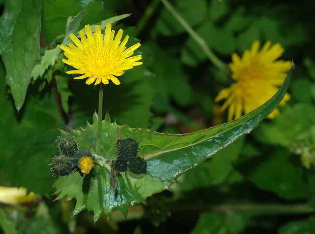

Pūhā
Pūhā is a wild green you can forage all year round across New Zealand. Thistle-like weed with soft, toothed, clasping leaves, milky sap and small yellow dandelion-like flowers.

When is pūhā in season in New Zealand?
Pūhā is usually in season all year round. Timing shifts with weather, latitude and altitude.
Where does pūhā grow in New Zealand?
Pūhā grows across New Zealand. Regions: Northland and Auckland, Central North Island, East Coast and Hawke's Bay, Wellington and Manawatū, Top of the South, West Coast, Canterbury, Otago and Southland.
How do you recognise pūhā?
Thistle-like weed with soft, toothed, clasping leaves, milky sap and small yellow dandelion-like flowers.
How do you harvest pūhā?
Pick young, tender leaves before flowering; older plants are bitter.
How do you eat pūhā?
Boil-up with pork and potatoes, or wilt like spinach.
How do you store pūhā?
Blanch and freeze.
What is pūhā good for?
Vitamin A, Vitamin C, Iron & calcium.
What can you cook with pūhā?
- Pork and pūhā boil-up: Pork bones, potatoes, kūmara and pūhā or watercress simmered with dumplings.